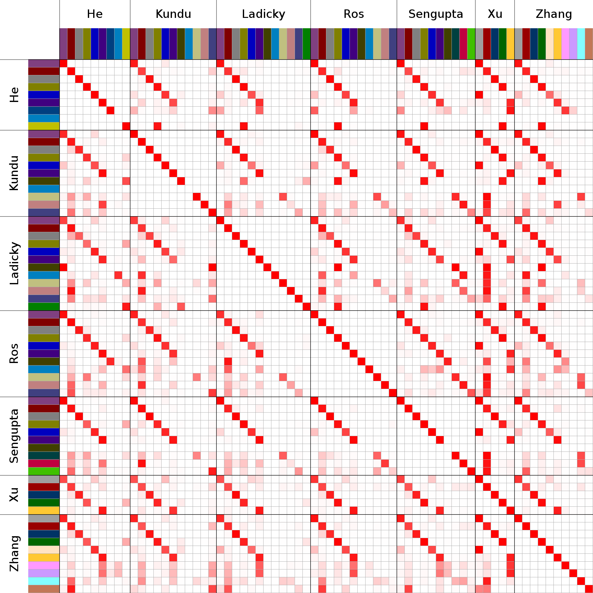

Please wait, while the deck is loading…
# {*no-status title-slide logos} // comment
-
- −
## `$ whoami` {image-full bottom-left darkened /black-bg /no-status}
- prob multiple slides {notes}
- thesis in software architecture (ambient intelligence)
- reorient: postdoc on using probabilistic models for pattern mining: created temporal topic models to unmix activities
- reorient: lab H Curien, Saint Étienne, core Machine Learning group (cite names and topics too)
- not an expert on most of these stuff
## Overview {#plan .plan image-fit darkened top-right /no-status}
- Introduction to Domain Adaptation {da}
- Domain Adaptation by Subspace Alignment {dasa}
- Landmarks-based Kernelized Subspace Alignment {landmarks}
- More? {more}
- Contextually Constrained Deep Networks for Scene Labeling
- Semantic Scene Parsing Using Inconsistent Labelings
# @copy:#plan: %+class:highlight: .da
## Domain Adaptation: What and Why? {libyli}
- When do we need Domain Adaptation (DA)? {card}
- The training distribution is different from the testing distribution
- Example Domain Adaptation task? {card}
- Given: labeled images (e.g., from a Web image corpus)
- Task: is there a Person in unlabeled images (e.g. from a Video corpus)
-
{no}
- {inlineblock center no custom1}
- 
Person
- 
not-Person
- ⇒
-
Person?
-
Person?
- How can we learn, from one distribution,
a low-error classifier on another distribution?
## Domain Adaptation: task and notations {libyli}
- Typical binary classification task
- $X$ : input space, $Y = \\{-1,+1\\} {}$ : output space
- Typical supervised classification {card}
- $\green{P_S} {}$ source domain: distribution over $X \times Y$
// - $\green{D_S}{}$: marginal distribution over $X$
- $\green{S}{} = \\{(x^s_i,y^s_i)\\}_{i=1}^{m_s} \sim (\green{P_S})^{m_s} {}$: a sample of labeled points
- Goal: Find a classifier $h \in \mathcal{H}{}$ with a low source error $R\_{\green{P\_S}}(h) = \mathbf{E}\_{(x^s,y^s)\sim \green{P_S}}\;\; \mathbf{I}\big[h(x^s)\ne y^s\big] {}$
- Domain Adaptation {card}
- $\orange{P_T} {}$ target domain: distribution over $X \times Y$, ($\orange{D_T}{}$: marginal over $X$)
- $\orange{T}{} = \\{(x^t_i)\\}_{j=1}^{m_t} \sim (\orange{D_T})^{m_t} {}$: a sample of unlabeled target points
- Goal: Find a classifier $h \in \mathcal{H}{}$ with a low target error $R\_{\orange{P\_T}}(h) = \mathbf{E}\_{(x^t,y^t)\sim \orange{P_T}}\;\; \mathbf{I}\big[h(x^t)\ne y^t\big] {}$
@svg:images-da/normal-vs-da.svg 375px 280px {normalvsda slide}
## Link the Target Risk to the Source?
\begin{matrix}
\\\\
R\_{\orange{P\_T}}(h)&=& \mathbf{E}\_{(x^t,y^t)\sim \orange{P\_T}}\mathbf{I}\big[h(x^t)\ne y^t\big]\\\\
\\\\
&=&\mathbf{E}\_{(x^t,y^t)\sim \orange{P\_T}}\frac{\green{P\_S}(x^t,y^t)}{\green{P\_S}(x^t,y^t)}\mathbf{I}\big[h(x^t)\ne y^t\big]\\\\
\\\\
&=&\sum\_{(x^t,y^t)} \orange{P\_T}(x^t,y^t)\frac{\green{P\_S}(x^t,y^t)}{\green{P\_S}(x^t,y^t)}\mathbf{I}\big[h(x^t)\ne y^t\big]\\\\
\\\\
&=&\mathbf{E}\_{(x^t,y^t)\sim
\green{P\_S}}\frac{\orange{P\_T}(x^t,y^t)}{\green{P\_S}(x^t,y^t)}\mathbf{I}\big[h(x^t)\ne
y^t\big]\\\\
\end{matrix}
{latex slide}
## Domain Adaptation − Covariate Shift? {libyli} // This difference between the two domains is called covariate shift (Shimodaira, 2000).
- {card dense}
- R\_{\orange{P\_T}}(h)\; =\;\; \mathbf{E}\_{(x^t,y^t)\sim \green{P\_S}}\frac{\orange{P\_T}(x^t,y^t)}{\green{P\_S}(x^t,y^t)}\mathbf{I}\big[h(x^t)\ne y^t\big] {latex}
- The target risk can be rewritten as an expectation on the source
- Covariate Shift {card}
- When $\green{P\_S}(y^t|x^t)=\orange{P\_T}(y^t|x^t)$ (covariate shift assumption)
- Very strong assumption
- We can estimate a ratio between unlabeled data
-
{no}
- \begin{matrix}
{R\_{\orange{P\_T}}(h)}&=&\mathbf{E}\_{(x^t,y^t)\sim \green{P\_S}}\frac{\orange{D\_T}(x^t)\orange{P\_T}(y^t|x^t)}{\green{D\_S}(x^t)\green{P\_S}(y^t|x^t)}\mathbf{I}\big[h(x^t)\ne y^t\big]\\\\ \\\\
&=&\mathbf{E}\_{(x^t,y^t)\sim \green{P\_S}}\frac{\orange{D\_T}(x^t)}{\green{D\_S}(x^t)}\mathbf{I}\big[h(x^t)\ne y^t\big]\\\\
\end{matrix}
{latex no slide}
- **⇒ Approach**: density estimation and instance re-weighting {no slide} // actually, it is simpler to estimate the density of the ratio
- {notes notslide}
- nice pres http://www.slideserve.com/Anita/sample-selection-bias
## Domain Adaptation − Domain Divergence {libyli}
- {card dense libyli}
- {inlineblock no}
- Labeled source samples $S$
drawn *i.i.d.* from $\green{P_S}{}$ {c5}
- {c1}
- Unlabeled target samples $T$
drawn *i.i.d.* from $\orange{P_T}{}$ {c5}
- $h$ is learned on the source, how does it perform on the target?
- ⇒ it depends on the closeness of the domains{no}
- {inlineblock no}
-
-
- Adaptation Bound [Ben-David et al., MLJ’10, NIPS’06] {card dense libyli}
- $\forall h\in\mathcal{H},\quad R\_{\orange{P\_T}}(h)\ \leq\ \; R\_{\green{P\_S}}(h)\ +\ \frac{1}{2} d\_{\mathcal{H}\;\Delta\;\mathcal{H}}(\green{D\_S},\orange{D\_T})\ +\ \nu $
- Domain divergence: $d\_{\mathcal{H}\;\Delta\;\mathcal{H}}(\green{D\_S},\orange{D\_T}) \;=\; 2 \sup\_{(h,h')\in\mathcal{H}^2} \Big| R\_{\orange{D\_T}}(h,h') - R\_{\green{D\_S}}(h,h')\Big| $
- Error of the joint optimal classifier: $\nu = \inf\_{h'\in\mathcal{H}}\big(R\_{\green{P\_S}}(h')+R\_{\orange{P\_T}}(h')\big)$
- {notes notslide}
- with some probability (1 - delta)
- H a symmetric hypothesis space
- More (by M. Sebban), epat slides
- about what is d_HH nips 07
# @copy:#plan: %+class:highlight: .dasa
## Unsupervised Visual Domain Adaptation Using Subspace Alignment − ICCV 2013
*Basura Fernando, Amaury Habrard, Marc Sebban, Tinne Tuytelaars (K.U. Leuven)* {paper libyli}
- Intuition for unsupervised domain adaptation
- principal components of the domains may be shared
- principal components should be re-aligned
- Principle
- extract a source subspace ($d$ largest eigen vectors)
- extract a target subspace ($d$ largest eigen vectors)
- learn a linear mapping function
that aligns the source subspace with the target one {slide anim-continue}
- {no}
- {notes notslide}
- KULeuven
- More (by M. Sebban)
## Subspace Alignment − Algorithm
- Algorithm {card custom2 libyli}
- **Input:** Source data $\green{S}{}$, Target data $\orange{T}{}$, Source labels $\green{L\_S}{}$
- **Input:** Subspace dimension $d$ {no}
- **Output:** Predicted target labels $\orange{L\_T} {}$ {no}
- $\green{X\_S} \leftarrow PCA(\green{S},d)$ *(source subspace defined by the first d eigenvectors)*
- $\orange{X\_T} \leftarrow PCA(\orange{T},d)$ *(target subspace defined by the first d eigenvectors)*
- $M \leftarrow \green{X\_S}' \orange{X\_T}{}$ *(closed form alignment)*
- $X\_a \leftarrow \green{X\_S} M$ *(operator for aligning the source subspace to the target one)*
- $\gray{S\_a} = \green{S} X\_a$ *(new source data in the aligned space)*
- $\gray{T\_T} = \orange{T} \orange{X\_T}{}$ *(new target data in the aligned space)*
- $\orange{L\_T} \leftarrow Classifier(\gray{S\_a},\green{L\_S}, \gray{T\_T})$
- A natural similarity: $Sim(\mathbf{x}\_s,\mathbf{x}\_t)=\mathbf{x}\_sX\_SMX\_T' \mathbf{x}\_t'=\mathbf{x}\_sA \mathbf{x}\_t'$ {slide}
## Subspace Alignment − Experiments {libyli}
- *@svg:images-da-align/img-iccv13.svg 800px 200px* {no}
- Comparison on visual domain adaptation tasks // SURF, 800 words?
- adaptation from Office/Caltech-10 datasets (four domains to adapt)
- adaptation on ImageNet, LabelMe and Caltech-256 datasets: one is used as source and one as target
- Other methods
- Baseline 1: projection on the source subspace
- Baseline 2: projection on the target subspace
- 2 related methods:
- GFS [Gopalan et al.,ICCV'11] // Geodesic flow subspaces
- GFK [Gong et al., CVPR'12] // Geodesic flow kernel
## Subspace Alignment − Results {dense libyli}
- Office/Caltech-10 datasets {inlineblock}
- @svg:images-da-align/result1-NN-iccv13.svg 330px 250px
- @svg:images-da-align/result1-SVM-iccv13.svg 330px 250px
- ImageNet (I), LabelMe (L) and Caltech-256 (C) datasets {inlineblock}
- @svg:images-da-align/result2-NN-iccv13.svg 330px 130px
- @svg:images-da-align/result2-SVM-iccv13.svg 330px 130px
## Subspace Alignment − Recap. {#sarecap}
- Good
- Very simple and intuitive method
- Totally unsupervised
- Theoretical results for dimensionality detection
- Good results on computer vision datasets
- Can be combined with supervised information (future work)
- Bad {limitations}
- Cannot be directly kernelized to deal with non linearity
- Actually assumes that spaces are relatively close
- Ugly {limitations}
- Assumes that all the source and target examples are relevant
- **Idea:** *Select landmarks from both source and target domains to project the data in a common space using a kernel w.r.t those chosen landmarks. Then the subspace alignment is performed. {dense}* {hidden}
# @copy:#plan: %+class:highlight: .landmarks
# @copy:#sarecap: %+class:highlight: .limitations + %-class:hidden: .hidden
## Principle of Landmarks {libyli}
- JMLR 2013 − *Connecting the Dots with Landmarks:
Discriminatively Learning Domain-Invariant Features for Unsupervised Domain Adaptation{denser}* {no}
- Boqing Gong, Kristen Grauman, Fei Sha
- Principle: find source points (the landmarks) such that
the domains are similarly distributed “around” {inlineblock}
- @svg:images-da-landmarks/landmarks1.svg 280px 100px
- @svg:images-da-landmarks/landmarks2.svg 280px 100px
- Optimization problem:
$\min\_\alpha \left\\| \frac{1}{\sum\_m \alpha\_m } \sum\_m \alpha\_m \phi (x\_m) - \frac{1}{N} \sum\_n \phi(x\_n) \right\\|^2$ {dense}
- {no}
- $\alpha$: binary landmark indicator variables
- $\phi(.)$: nonlinear mapping, maps every $x$ to a RKHS
- minimize the difference in sample-means
- \+ a constraint: *labels should be balanced among the landmarks*
## Landmarks-based Kernelized Subspace Alignment for Unsupervised DA − CVPR 2015
*Rahaf Aljundi, Rémi Emonet, Marc Sebban* {paper libyli}
- Intuition for landmarks-based alignment
- subspace alignment does not handle non-linearity
- subspace alignment cannot “ignore” points
- landmarks can be a useful to handle locality and non-linearity
- Challenges
- selecting landmarks in a unsupervised way
- choosing the proper Gaussian-kernel scale
@svg:images-da-landmarks/landmarks2.svg 700px 200px
## Proposed Approach − Workflow
@svg:images-da-landmarks/workflow.svg 700px 400px
- @anim: %viewbox:#zlandpro | %viewbox:#zpca | %viewbox:#zalign | %viewbox:#zclassify | %viewbox:#zall
- Overall approach
- 2 new steps: *landmark selection*, *projection* on landmarks
- subspace alignment
## Multiscale Landmark Selection {libyli}
- Select landmarks among all points, $\green{S} \cup \orange{T} {}$
- Greedy selection
- consider each candidate point $c$ and a set of possible scales $s$
- criteria to promote the candidate
- after projection on the candidate
- the overlap between source and target distributions is above a threshold
- Projection: a point is projected with $K(c, p)= \exp \left( \frac{-\left\|c - p\right\|^2}{2 s^2} \right)$ {dense}
- Overlap {libyli}
- project source and target points
- fit two Gaussians (one for each)
- $ overlap(\green{\mu\_S, \sigma\_S} ; \orange{\mu\_T, \sigma\_T}) = \frac{\mathcal{N}(\green{\mu\_S} - \orange{\mu\_T} \mid 0, \sigma\_{sum}^2)}{\mathcal{N}(0 \mid 0, \sigma\_{sum}^2)} $
- normalized integral of product
- with $\sigma\_{sum}^2 = \green{\sigma\_S}^2 + \orange{\sigma\_T}^2$, and $\mathcal{N}(. \mid 0, \sigma\_{sum}^2)$ centered 1d-Gaussian
## Landmark-Based Alignment − Overall {#sadarecap libyli}
- Select landmarks among all points, $\green{S} \cup \orange{T} {}$
- greedy selection
- multi-scale selection
- maximize domain overlap
- Project all points on the landmarks
- use a Gaussian kernel
- $\sigma \gets median\\_distance(S \cup T) $
- Subspace-align the projected points
- PCA on source domain
- PCA on target domain
- compute the alignment $M$
## Landmark-Based Alignment − Results {libyli}
- Is landmark-based kernelization useful?
- *@svg:images-da-landmarks/results.svg 730px 200px* {no}
- Is our landmark-selection any good?
- *@svg:images-da-landmarks/results-sel-landmarks.svg 730px 200px* {no}
# @copy:#plan: %+class:highlight: .more
## Task: Semantic Scene Labeling
- For each pixel in an image (or video), predict its class
- e.g., building, road, car, pedestrian, sign, ...
## Contextually Constrained Deep Networks for Scene Labeling − BMVC 2015
*Taygun Kekec, Rémi Emonet, Elisa Fromont, Alain Trémeau, Christian Wolf* {paper libyli}
- Observation
- state of the art uses deep CNN (conv. net.)
- learning is patch-based, using the center label
- training images are densely labeled
- Idea
- use labels in the patch to guide the network
- force a part of the network to use the context (like an MRF)
- @anim: .hasSVG
@svg:cnn-context/cnn-app1.svg 800px 200px
## The Network // inspired by Farabet's paper
@svg:cnn-context/cnns.svg 800px 400px
## Multi-Step Learning {libyli}
@svg:cnn-context/cnn-app1.svg 800px 200px
- Learn the context net (yellow)
- Learn the dependent net (blue)
- freeze the context net
- use prediction, mixed with some ground truth (probability $\tau$) // small
- Fine tuning
- unfreeze the context net
- no intermediate supervision
- allow for co-adaptation
## Contextually Constrained − Results
@svg:cnn-context/bmvc2014-results.svg 800px 400px
## Semantic Scene Parsing Using Inconsistent Labelings − CVPR 2016?
*Damien Fourure, et al.* {paper libyli}
- Context: KITTI dataset
- urban scenes recorded from a car
- many sensors (RGB, stereo, laser, ...), different tasks
- Observation (scene labeling on KITTI) {obs}
- different groups labeled frames
- they used different frames (mostly) and different labels
- the quality/precision of annotations varies
- @anim: .obs, .hasSVG
- Goal
- leverage all these annotations
- improve segmentation on individual labelsets/datasets
@svg:cnn-context/kitti-amount-labeled.svg 800px 200px
## Labels
- 7 different label sets
@svg:cnn-context/kitti-labels.svg 800px 200px
@svg:cnn-context/kitti-amount-labeled.svg 800px 200px
## First Approach
- a) Baseline: separate training
- b) Joint Training
- with datasetwise soft-max
- with selective loss function
## Labels Correlation After Joint Training

- Observing outputs
after joint training {c5 libyli}
- correlation across datasets
- @anim: img
- clear correspondence for some labels
- one-to-many correspondences
## Exploiting Correlations after Joint Training
- c) Joint Training with shared context {appc}
- a single network to learn all correlations
- d) Joint Training with individual context {appd}
- a specialized network per labeling
- @anim: .appc | .appd
## Joint Training − Results
@svg:cnn-context/kitti-results.svg 800px 300px
# @copy:#plan
# Thanks! More Questions?
**
{*no-status title-slide logos deck-status-fake-end}
-
- −
# {deck-status-fake-end no-print}
## Supplementary slides − Links {no-print}
- More details on DA (by M. Sebban)
- Probabilistic Motif Mining
- HCERES summary
- VLTAMM, Multicam, etc
- Bobbing 101
will be replaced by the title
/